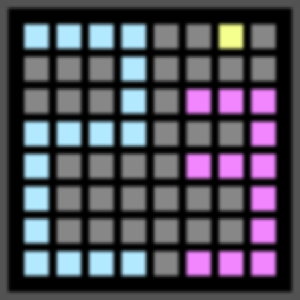
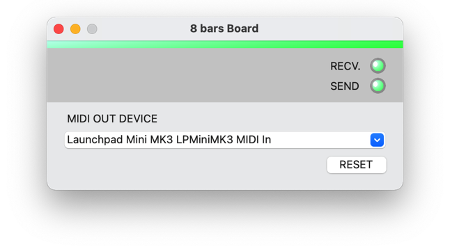
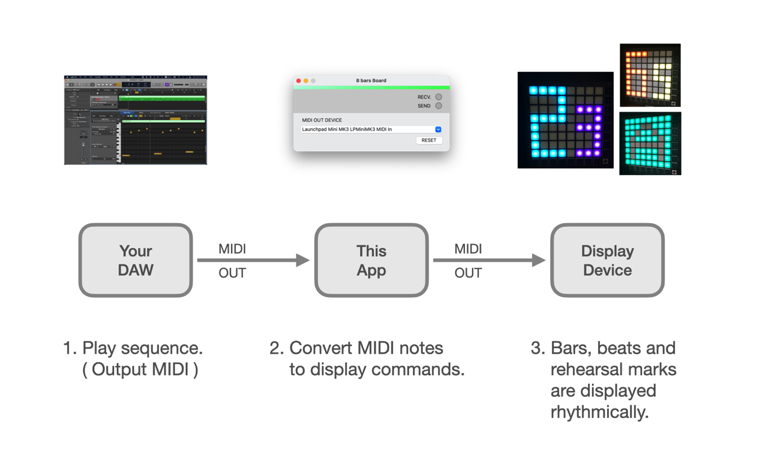
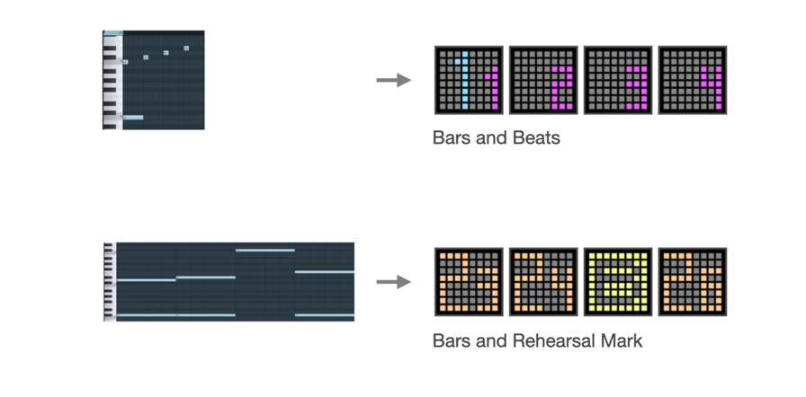
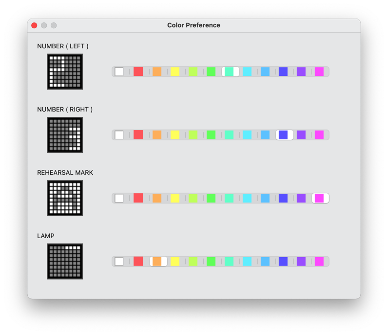
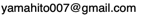

8 bars Board
About 8 bars Board
8 bars Board is MIDI-controllable beat display system.


8 bars Board application works as a virtual MIDI device on your computer.
By connecting DAW and display device, you can display bars and beats on display device, controlled by the MIDI sequence on DAW.

NOTE : This product does not include DAW and display device.
System requirement
This software is an application that runs on macOS.
Supported OS :
- macOS 11(Big Sur)
- macOS 12(Monterey)
Download
Operation confirmed DAWs
Currently, the following DAWs have been confirmed to work.
- Logic Pro v10.6.0
- FL Studio 20.9
- Studio One Prime v5.5.0
- Cubase LE 11
NOTE : Your DAW must have the ability to output MIDI to an external device.
(GarageBand is not supported because it does not have the ability to output MIDI to external devices.)
Supported display devices
As display device, only NOVATION's Launch Pad mini MK3 is supported.
MIDI Sequence Example
The following is an example of a MIDI sequence.

Mapping between pitch and display content
The pitch of the note determines what is displayed on the display device.

Change color
The colors shown on the display device can be changed from the Settings dialog.

Others
- yamahito software holds the copyright of 8 bars Board.
History
- 02/01/2022 Ver1.0 Initial Release
- 04/11/2022 Ver1.1 Update manual, Adjust color.
Web: https://yamahito-software.github.io/docs/
Mail: 
Copyright 2022 yamahito software